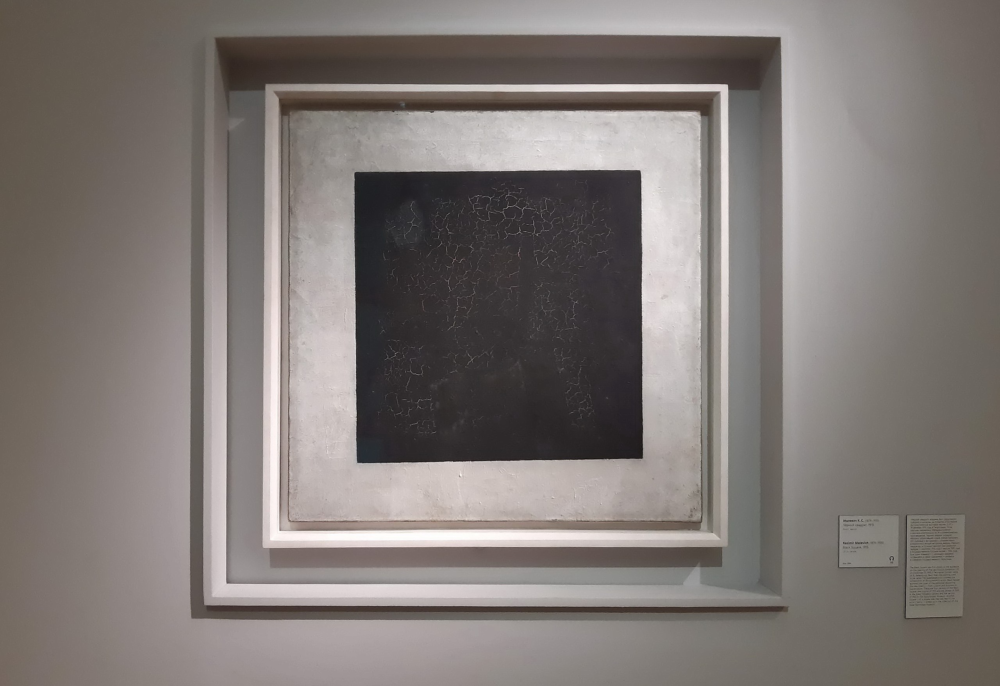

Чёрный квадрат - Каземир Малевич
Описание картины "Чёрный квадрат":
«Черный квадрат» Казимира Малевича – одно из самых загадочных произведений ХХ века, радикально перевернувшее прежние представления об искусстве. Впервые работа была показана в декабре 1915 года в Петрограде на Последней футуристической выставке «0,10» в окружении новых беспредметных работ Малевича. Художник повесил «Черный квадрат» на стыке двух стен, выше всех остальных картин, тем самым выделив и подчеркнув его значительность – он венчал всю группу супрематических работ, названных автором «Супрематизм живописи». Как известно, Малевич выводил происхождение «Черного квадрата» из оформления оперы «Победа над солнцем» (1913), для одного из действий он выполнил эскиз занавеса с изображением квадрата. Художник считал свой «Черный квадрат» самой беспредметной работой, более того – формулой беспредметного искусства. Для его создания необходимо было оборвать все связи с реальностью, отбросить все традиции, достичь «нуля форм». «Я уничтожил кольцо горизонта, и вышел из круга вещей».